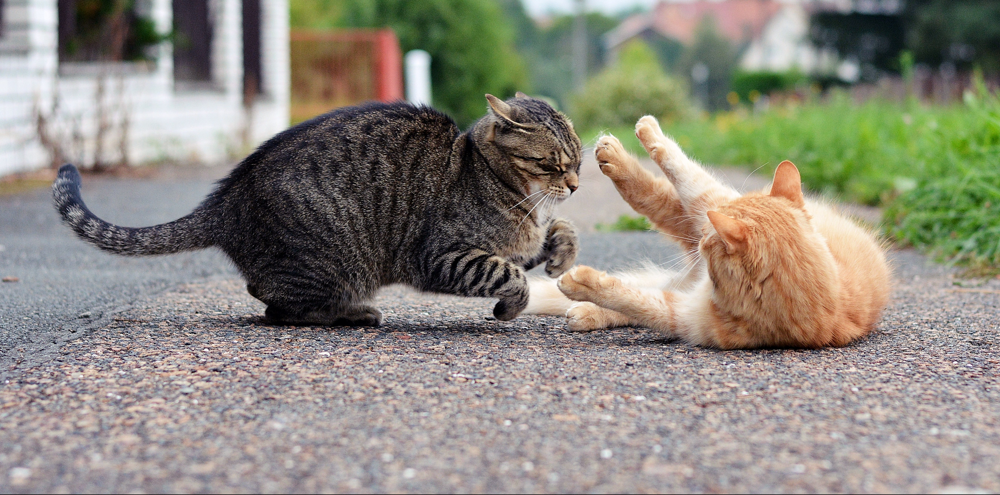
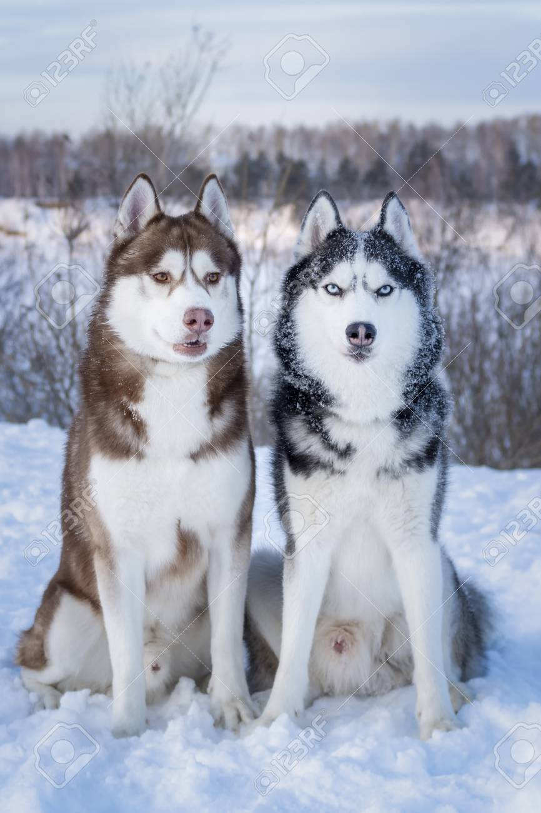

在網頁裡面，如果你需要放圖片時，他有提供一個img標籤可以讓你在畫面中載入圖片
單純在src的部分加上圖片位置路徑 就可以載入圖片
alt則是替代文字，在圖片連結失聯的時候會代為顯現這些文字
但是他做為一張普通的圖片標籤，因為沒有結尾標籤，相對在排版上能做的事比較少
在網頁中除了圖片標籤以外，也可以藉由背景圖片的屬性載入圖片到畫面中
上方圖片為cover,下方圖片為contain
那，我何時決定要用img標籤，還是使用div的背景圖片呢?
如果這張圖片，很重要。絕對不希望被干擾或切掉。建議使用img標籤。反之如果可以接受排版的改變。使用div
補充，圖片/影片路徑
本機(本地)圖片，我們可以使用相對路徑，以自身檔案為出發點去找檔案
相對路徑不需要開頭，可以直接指定檔案。 或者是用"./"
例如:我要找到跟我這個網頁同目錄底下的FB切版 新版.png

如果:要找同層的資料夾裡面的圖片 使用/去下一個目錄
如果:我要找到隔壁資料夾裡面的圖片 可以用 .. 移至上一層目錄

本機(本地)圖片，除了可以使用相對路徑外，也可以使用絕對路徑去尋找
絕對路徑的起始點會以"網站的根目錄開始"，所以在下手前必須看清楚自己開啟的資料夾是哪一個
絕對路徑的寫法以"/"做為開頭

絕對路徑要注意的點就是如果你的根目錄(網站起始點)不一樣，圖片就有可能找不到